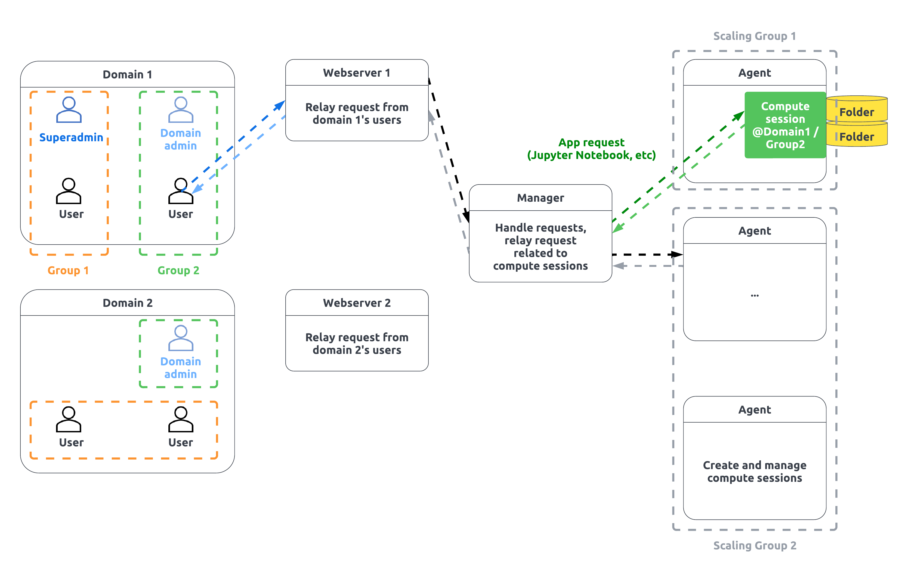

개요#
Backend.AI는 오픈소스 클라우드 자원 관리 플랫폼으로, 클라우드 또는 온프레미스 환경에서 가상화된 연산 자원 클러스터를 손쉽게 활용할 수 있도록 합니다. Backend.AI의 컨테이너 기반 GPU 가상화 기술은 하나의 물리 GPU를 유연하게 분할하여 여러 사용자가 동시에 사용할 수 있도록 지원함으로써, GPU의 효율적인 활용을 돕습니다.
Backend.AI는 머신러닝 및 고성능 컴퓨팅 클러스터에 적합한 성능 중심의 다양한 최적화와 함께, 연구원, 관리자, DevOps 등 다양한 사용자를 지원하는 관리 및 연구 기능을 제공합니다. 엔터프라이즈 버전은 멀티 도메인 관리, 슈퍼 관리자 전용 Control-Panel, GPU 가상화 플러그인 기능을 추가적으로 지원합니다.
Backend.AI 서버가 지원하는 기능을 손쉽게 활용할 수 있도록 GUI 클라이언트 패키지도 함께 제공하고 있습니다. Backend.AI WebUI는 웹 서비스 또는 독립 실행형 앱 형태의 GUI 클라이언트입니다. Backend.AI 서버에 접속하여 연산 자원을 활용하고 환경을 관리할 수 있는 편리한 그래픽 인터페이스를 제공합니다. Backend.AI는 별도의 프로그램 설치 없이 즉시 연산 세션을 생성할 수 있는 사전 구성된 이미지를 제공합니다. 대부분의 작업을 마우스 클릭과 짧은 타이핑으로 수행할 수 있어 보다 직관적으로 사용할 수 있습니다.
주요 개념#

- 사용자: Backend.AI에 접속하여 작업을 수행하는 주체입니다. 사용자는 권한에 따라 사용자, 도메인 관리자, 슈퍼 관리자로 구분됩니다. 일반 사용자는 자신의 연산 세션과 관련된 작업만 수행할 수 있는 반면, 도메인 관리자는 도메인 내의 작업을 수행할 수 있는 권한을 가지며, 슈퍼 관리자는 시스템 전체에 걸쳐 거의 모든 작업을 수행할 수 있습니다. 사용자는 하나의 도메인에 속하며, 도메인 내의 여러 프로젝트에 동시에 속할 수 있습니다.
- 연산 세션, 컨테이너: 코드가 실행되는 격리된 가상 환경입니다. 완전한 사용자 권한을 가진 실제 Linux 서버처럼 보이며, 같은 서버에서 실행되더라도 다른 사용자의 세션을 볼 수 없습니다. Backend.AI는 이러한 가상 환경을 컨테이너라는 기술을 통해 구현합니다. 사용자는 자신이 속한 도메인과 프로젝트 내에서만 연산 세션을 생성할 수 있습니다.
- 도메인: Backend.AI에서 지원하는 권한 및 자원 제어를 위한 최상위 계층입니다. 회사나 조직의 경우, 도메인을 하나의 계열사로 보고 도메인별(또는 계열사별) 권한 및 자원 정책 등을 설정할 수 있습니다. 사용자는 반드시 하나의 도메인에 속하며, 자신의 도메인에서만 세션을 생성하거나 관련 작업을 수행할 수 있습니다. 도메인에는 하나 이상의 도메인 관리자가 있을 수 있으며, 도메인 관리자는 도메인 내의 정책을 설정하거나 세션을 관리할 수 있습니다. 예를 들어, 도메인 내에서 사용할 수 있는 총 자원량을 설정할 경우, 도메인 내 사용자가 생성한 모든 컨테이너의 자원은 설정된 양을 초과할 수 없습니다.
- 프로젝트: 도메인 하위에 속하는 계층입니다. 한 도메인에는 여러 개의 프로젝트가 존재할 수 있습니다. 프로젝트는 하나의 작업 단위로 생각할 수 있습니다. 사용자는 한 도메인 내에서 여러 프로젝트에 동시에 속할 수 있습니다. 연산 세션은 반드시 하나의 프로젝트에 속해야 하며, 사용자는 자신이 속한 프로젝트 내에서만 세션을 생성할 수 있습니다. 도메인 관리자는 도메인 내 프로젝트의 정책을 설정하거나 세션을 관리할 수 있습니다. 예를 들어, 프로젝트 내에서 사용할 수 있는 총 자원량을 설정할 경우, 프로젝트 내 사용자가 생성한 모든 컨테이너의 자원은 설정된 양을 초과할 수 없습니다.
- 이미지: 각 컨테이너에는 미리 설치된 언어별 런타임과 각종 연산 프레임워크가 포함되어 있습니다. 실행되기 전의 이러한 스냅샷 상태를 이미지라고 합니다. 클러스터 관리자가 제공하는 이미지를 선택하여 실행하거나, 원하는 소프트웨어가 설치된 자체 이미지를 만들어 관리자에게 등록을 요청할 수 있습니다.
- Virtual Folder (vfolder; 가상 폴더): 사용자별로 컨테이너가 어느 노드에서 실행되든 관계없이 항상 접근 및 마운트가 가능한 "클라우드" 폴더입니다. 자신만의 가상 폴더를 생성한 후, 프로그램 코드나 데이터 등을 미리 업로드해 두고 연산 세션 실행 시 마운트하여 로컬 디스크에 있는 파일처럼 읽고 쓸 수 있습니다.
- 애플리케이션 서비스, 서비스 포트: 연산 세션 내에서 실행되는 다양한 사용자 애플리케이션(예: DIGITS, Jupyter Notebook, 쉘 터미널, TensorBoard 등)에 접속할 수 있게 해주는 기능입니다. 컨테이너의 주소 및 포트 번호를 직접 알 필요 없이, 제공되는 CLI 클라이언트 또는 GUI WebUI를 이용하여 원하는 세션의 데몬에 바로 접속할 수 있습니다.
- WebUI: 웹 또는 독립 실행형 앱으로 제공되는 GUI 클라이언트입니다. Backend.AI 서버의 주소를 지정하고 사용자 계정 정보를 입력하여 로그인한 후 서비스를 사용할 수 있습니다.
- 로컬
wsproxy: WebUI 앱에 내장된 프록시 서버입니다. 로컬wsproxy는 서버와 WebUI 앱 간의 일반 HTTP 요청을 websocket으로 변환하여 메시지를 전달합니다. WebUI 앱과wsproxy간의 연결이 끊기거나wsproxy서버가 중단되면 Jupyter Notebook, Terminal 등의 서비스에 접속할 수 없습니다. - 웹 App Proxy: 웹 형태로 제공되는 WebUI의 경우, 브라우저의 특성상 내장 서버를 사용할 수 없습니다. 이 경우 App Proxy를 별도의 독립 웹 서버로 제공하고 WebUI 앱이 이를 바라보게 함으로써, 웹 환경에서도 Jupyter Notebook, Terminal 등의 서비스를 사용할 수 있습니다.
Backend.AI 기능 상세#
가속기 지원
| 카테고리 | 최소 사양 | 전용 기능 |
|---|---|---|
| AMD | MI250X 이상 | |
| Furiosa | Warboy / RNGD | |
| TPU | ||
| Graphcore | IPU | |
| Groq | Groqcard | |
| HyperAccel | LPU | |
| Intel | Gaudi 2 및 3 | 메모리 사용 기반 자동 유휴 자원 회수 |
| NVIDIA 지원 | CUDA compute capability 7.5 이상 - 모델 추론: NVIDIA Hopper 이상 (대상 양자화에 따라 다름) - 모델 학습: NVIDIA Ampere 이상 |
(엔터프라이즈) 컨테이너를 위한 분할 GPU(fGPU) 가상화 및 공유 컨테이너 레벨 멀티 GPU 여러 CUDA 라이브러리 버전 지원 GPUDirect 스토리지 지원 NGC (NVIDIA GPU Cloud) 이미지 통합 GPU-GPU 네트워크 자동 구성 |
| Rebellions | ATOM / ATOM+ / ATOM-Max | |
| Sapeon | X220 / X330 | |
| Tenstorrent | Wormhole |
기타 기능
| 카테고리 | 기능 |
|---|---|
| 스케일링 | 베어메탈 / VM 온프레미스 설치 |
| 하이브리드 클라우드 (온프레미스 + 클라우드) | |
| 폴리클라우드 (멀티 클라우드 페더레이션) | |
| 스케줄링 | GUI 관리자를 통한 통합 스케줄링 및 모니터링 |
| 사용자별 자원 정책 | |
| 키페어별 자원 정책 | |
| 프로젝트별 자원 정책 | |
| 가용성 슬롯 기반 스케줄링 | |
| (엔터프라이즈) 활용 기반 자원 관리 | |
| 클러스터 파티셔닝 | H/W 사양 및 용도별 자원 그룹 |
| (엔터프라이즈) 자원 그룹에 대한 사용자 접근 제어 | |
| (엔터프라이즈) 자원 그룹에 대한 프로젝트 접근 제어 | |
| 보안 | 하이퍼바이저/컨테이너를 통한 샌드박싱 |
| 각 사용자에 대한 접근 로그 | |
| 세션(컨테이너)별 로그 | |
| UI / UX | GUI 웹 인터페이스 |
| (엔터프라이즈) 관리자 GUI 웹 인터페이스 | |
| (엔터프라이즈) MLOps 파이프라인 웹 인터페이스 | |
| 데이터 관리 | EFS, NFS, SMB 및 분산 파일 시스템 (CephFS, GlusterFS, HDFS 등) |
| (엔터프라이즈) 스토리지 솔루션 통합: CephFS, Dell PowerScale, IBM SpectrumScale, NetApp, PureStorage, WEKA | |
| 사용자/프로젝트별 세분화된 데이터 접근 제어 | |
| 사용자/프로젝트별 스토리지 쿼타 관리* | |
| 개발자 지원 | 범용 프로그래밍 언어 (Python, C/C++ 등) |
| 인터랙티브 웹 앱 (Terminal, Jupyter, VSCode, MLFlow, Microsoft NNI, R Studio 등) | |
| 다양한 유형의 연산 세션 제공 (대화형, 배치, 추론) | |
| 데이터 사이언티스트용 | 여러 버전의 라이브러리를 실행하는 사용자 (예: TensorFlow, PyTorch) |
| 여러 버전의 라이브러리를 동시에 사용하는 사용자 | |
| ML 라이브러리의 주기적인 업데이트 | |
| 고객 지원 (엔터프라이즈) | 온사이트 설치 (베어메탈 / VM) |
| 구성 지원 (온프레미스 + 클라우드) | |
| 관리자 / 사용자 교육 | |
| 최신 버전 업데이트 지원 | |
| 우선 개발 및 에스컬레이션 | |
| 맞춤형 컨테이너 이미지 / 커널 또는 커널 저장소 |
* 디렉토리 쿼타 관리를 지원하는 스토리지에서만 사용 가능합니다.